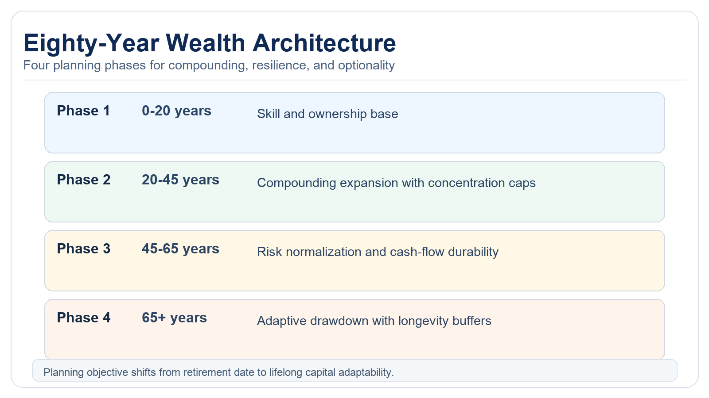

Longevity Capital: How Living to 120 Rewrites Wealth Planning Assumptions
If healthy lifespans extend significantly, the entire financial foundation changes: savings rates, withdrawal logic, career planning, housing strategy, and the timing of wealth transfers.
Longevity science is still evolving, but planning cannot wait for certainty. If a 40-year-old today could face an 80-year financial horizon rather than a 40-year horizon, traditional retirement planning becomes less robust. Most planning systems still assume one career arc, one accumulation phase, one retirement phase, and steady spending. Extended healthy lifespans break this sequence. The fundamental challenge shifts from funding a fixed retirement period to maintaining financial viability across a potentially open-ended horizon. This requires a shift from fixed-endpoint planning to managing finances across multiple uncertain scenarios.

What Changes First
Retirement age becomes less central
The critical variable shifts from "retirement date" to "ability to generate income across decades." Households need recurring earning options and skill renewal, not just fixed withdrawal models. The concept of a single retirement age becomes less relevant when individuals may experience multiple career transitions and partial retirements. Financial plans must incorporate mechanisms for periodic income regeneration rather than treating stopping work as a permanent state.
Asset duration needs redesign
Longer horizons can support larger growth exposure, but only if liquidity ladders and risk controls prevent forced selling during adverse cycles. Long-term holdings without resilience act as fragile leverage. Traditional glide paths that automatically reduce equity exposure as investors age become problematic when investors may need growth exposure for 60-80 years. Instead, portfolios require dynamic asset allocation frameworks that respond to personal longevity indicators and market conditions rather than age alone.
Healthcare and insurance planning expands
Longer lives increase cumulative exposure to care costs, insurance repricing, and policy shifts. Planning has to account for cost fluctuations, not just average trends. The probability of requiring long-term care increases substantially with extended lifespans, while healthcare inflation typically outpaces general inflation. Insurance products must be evaluated for their sustainability across potentially 50+ years of retirement, including insurer solvency risk and contract longevity.
Estate timing assumptions invert
Longer lives delay transfer timing and can alter opportunities for heirs. Families may need explicit structures for staged transfers and shared capital access before final estate settlement. Traditional estate planning that assumes wealth transfer at death becomes inefficient when heirs may be in their 60s or 70s before receiving inheritances. Families should consider lifetime gifting strategies, family partnerships, and educational funding mechanisms that transfer value when it has maximum impact.
The New Planning Problem
Traditional planning optimizes for sufficiency at a single endpoint. Longevity capital planning optimizes for adaptability across multiple scenarios. This requires a planning process with regular recalibration, not a fixed projection prepared once a decade. The planning framework must incorporate regular assessments of health status, cognitive function, family dynamics, and regulatory environments. Decision points should be structured around life milestones and health markers rather than arbitrary age-based triggers.
Core shift: plan for multiple compounding phases across life, not one accumulation phase followed by permanent drawdown. Financial sustainability becomes a continuous process of adaptation rather than a destination reached at retirement.
Eighty-Year Architecture

Phase 1 builds skills and ownership base. Phase 2 expands compounding while capping concentration risk. Phase 3 normalizes risk and secures cash-flow durability. Phase 4 runs adaptive drawdown with a longevity buffer and governance rules that withstand policy and market shifts. Each phase requires distinct investment philosophies, insurance structures, and liquidity profiles. The transitions between phases should be gradual and responsive to individual circumstances rather than predetermined by age-based rules.
Practical Implications For Households In 2026
1) Increase emphasis on portable earnings capacity
Career optionality becomes a valuable asset when lifespan assumptions extend. Invest in skills that remain relevant across economic cycles and technological disruptions. Develop multiple income streams that can be scaled up or down as needed throughout extended working years. Consider professional certifications, network building, and side businesses as legitimate components of financial security.
2) Preserve compounding base longer
Avoid premature transition to low-growth portfolios if the horizon remains long and health status supports active planning. Implement spending rules that protect principal during market downturns and allow recovery time. Consider bucket strategies that separate short-term liquidity needs from long-term growth assets rather than overall portfolio risk reduction.
3) Build policy-aware flexibility
Tax regimes, retirement systems, and healthcare structures will change over multi-decade horizons. Risk tied to a single location should be managed explicitly. Maintain flexibility in account types, geographic diversification, and withdrawal strategies to adapt to regulatory changes. Consider the portability of benefits and the political sustainability of social programs when making long-term assumptions.
4) Treat longevity as uncertainty, not guaranteed upside
Plan with scenario bands: baseline lifespan, extended lifespan, and high-cost adverse path. Capital architecture should survive all three. Develop contingency plans for cognitive decline, disability, and unexpected health events. Insurance products and legal documents should be structured to provide protection across multiple potential longevity outcomes rather than optimizing for a single expected lifespan.
Source List
Social Security Administration. (2025). Actuarial life table context.
World Economic Forum. (2024). Longevity economy framing.
OECD. (2025). Pension systems and aging workforce references.
Nature Biotechnology. (2025). Translational context on anti-aging medicine timeline.